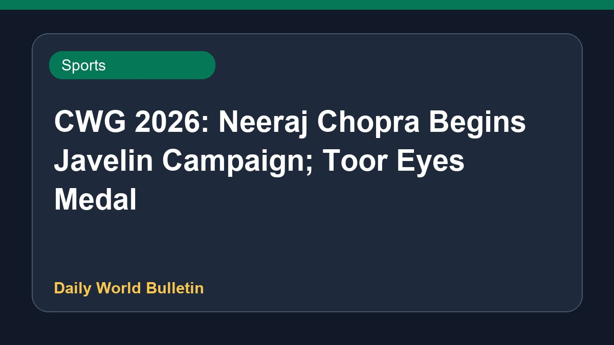

CWG 2026: Neeraj Chopra Begins Javelin Campaign; Toor Eyes Medal

Indian track and field athletes take centre stage at the Commonwealth Games 2026 in Glasgow on July 30, marking Day 8 of the competition. Star javelin thrower Neeraj Chopra is set to begin his campaign to reclaim the javelin title and target his second Commonwealth Games gold medal, despite facing a transformed competitive field. Additionally, shot putter Tajinderpal Singh Toor will feature in his discipline, aiming to secure a medal for the country. India looks to add more medals to its tally as the full event schedule unfolds throughout the day.
Editor’s context
Los lectores deben verificar la fuente original para confirmar los horarios exactos de las competencias y los resultados en tiempo real, ya que la cobertura en vivo del evento puede cambiar rápidamente y los detalles específicos están sujetos a actualizaciones de última hora en los portales oficiales.
CWG 2026 India schedule today, July 30: Neeraj Chopra opens title bid; Tajinderpal Singh Toor eyes shot put medal - olympics.com ↗